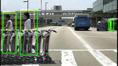
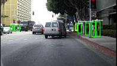
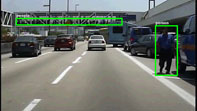
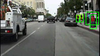

Caltech Pedestrian Detection Benchmark




Description
The Caltech Pedestrian Dataset consists of approximately 10 hours of 640x480 30Hz video taken from a vehicle driving through regular traffic in an urban environment. About 250,000 frames (in 137 approximately minute long segments) with a total of 350,000 bounding boxes and 2300 unique pedestrians were annotated. The annotation includes temporal correspondence between bounding boxes and detailed occlusion labels. More information can be found in our PAMI 2012 and CVPR 2009 benchmarking papers.
Download
- Caltech Pedestrian Dataset. The training data (set00-set05) consists of six training sets (~1GB each), each with 6-13 one-minute long seq files, along with all annotation information (see the paper for details). The testing data (set06-set10) consists of five sets, again ~1GB each. New: annotations for the entire dataset are now also provided. Output files containing detection results for all evaluated algorithms are also available.
- Seq video format. An seq file is a series of concatenated image frames with a fixed size header. Matlab routines for reading/writing/manipulating seq files can be found in Piotr's Matlab Toolbox (version 3.20 or later required). These routines can also be used to extract an seq file to a directory of images.
- Matlab evaluation/labeling code (3.2.1). The annotations use a custom "video bounding box" (vbb) file format. The code also contains utilities to view seq files with annotations overlaid, evaluation routines used to generate all the ROC plots in the paper, and also the vbb labeling tool used to create the dataset (see also this somewhat outdated video tutorial).
- Additional datasets in standardized format. For convenience we are posting full images/annotations in seq/vbb format as well as detection results for all evaluated algorithms on a number of additional datasets. This facilitates training/testing on these additional datasets and exact reproduction of all ROC curves. Full copyright remains with the original authors, please see the respective website for additional information including how to cite evaluation results on these datasets. INRIA pedestrian dataset [converted], ETH pedestrian dataset [converted], TUD-Brussels pedestrian dataset [converted], Daimler pedestrian dataset [converted].
Benchmark Results
For details on the evaluation scheme please see our PAMI 2012 paper.
Note: The evaluation scheme has evolved since our CVPR 2009 paper.
Note: We render at most 15 top results per plot (but always include the VJ and HOG baselines).
- Caltech Pedestrian Testing Dataset: We give two set of results: on 50-pixel or taller, unoccluded or partially occluded pedestrians (reasonable), and a more detailed breakdown of performance as in the paper (detailed).
- Caltech Pedestrian Training Dataset: Results on the Caltech training data: reasonable, detailed.
- Caltech Pedestrian Japan Dataset: Similar to the Caltech Pedestrian Dataset (both in magnitude and annotation), except video was collected in Japan. We cannot release this data, however, we will benchmark results to give a secondary evaluation of various detectors. Results: reasonable, detailed.
- INRIA Pedestrian Test Dataset: Full image results on the INRIA Pedestrian dataset (evaluation details).
- ETH Pedestrian Dataset: Results on the ETH Pedestrian dataset (evaluation details).
- TUD-Brussels Pedestrian Dataset: Results on the TUD-Brussels Pedestrian dataset (evaluation details).
- Daimler Pedestrian Dataset: Results on the Daimler Pedestrian dataset (evaluation details).
Submitting Results
Please contact us to include your detector results on this site. We perform the evaluation on every 30th frame, starting with the 30th frame. For each video, the results for each frame should be a text file, with naming as follows: "I00029.txt, I00059.txt, ...". Each text file should contain 1 row per detected bounding box, in the format "[left, top, width, height, score]". If no detections are found the text file should be empty (but must still be present). The directory structure should mimic the directory structure containing the videos: "set00/V000, set00/V001...". Please see the output files for the evaluated algorithms (available in the download section) if the above description is unclear. Note that during evaluation all detections for a given video are concatenated into a single text file, thus avoiding having tens of thousands of text files per detector (see provided detector files for details).
Related Datasets
Below we list other pedestrian datasets, roughly in order of relevance and similarity to the Caltech Pedestrian dataset. A more detailed comparison of the datasets (except the first two) can be found in the paper.
- GM-ATCI: Rear-View Pedestrians Dataset captured from a fisheye-lens camera.
- Daimler: Also captured in an urban setting, update of the older DaimlerChrysler dataset. Contains tracking information and a large number of labeled bounding boxes.
- NICTA: A large scale urban dataset collected in multiple cities/countries. No motion/tracking information, but significant number of unique pedestrians.
- ETH: Urban dataset captured from a stereo rig mounted on a stroller.
- TUD-Brussels: Dataset with image pairs recorded in an crowded urban setting with an onboard camera.
- INRIA: Currently one of the most popular static pedestrian detection datasets.
- PASCAL: Static object dataset with diverse object views and poses.
- CVC-ADAS: collection of pedestrian datasets including pedestrian videos acquired on-board, virtual-world pedestrians (with part annotations), and occluded pedestrians.
- USC: A number of fairly small pedestrian datasets taken largely from surveillance video.
- MIT: One of the first pedestrian datasets, fairly small and relatively well solved at this point.
Change Log
- 07/01/2019: Added ADM, ShearFtrs, and AR-Ped results.
- 08/31/2018: Added GDFL results.
- 07/05/2018: Added TLL-TFA results.
- 07/05/2018: Added FasterRCNN+ATT and AdaptFasterRCNN results.
- 06/03/2018: Added F-DNN2+SS results.
- 04/15/2018: Added PCN results.
- 11/20/2017: Added SDS-RCNN results.
- 10/23/2017: Added UDN+ results.
- 12/12/2016: Added ACF++/LDCF++, MRFC, and F-DNN results.
- 09/04/2016: Added MS-CNN results.
- 07/26/2016: Added RPN+BF results.
- 03/04/2016: Added SA-FastRCNN results.
- 11/08/2015: Added SCF+AlexNet results.
- 10/26/2015: Added CompACT-Deep results.
- 09/24/2015: Added CCF results.
- 09/16/2015: Added Checkerboards, LFOV, DeepCascade, DeepParts, SCCPriors, TA-CNN, FastCF, and NAMC results. Slightly updated display code for latest OSX Matlab. Fixed some broken links.
- 10/29/2014: New code release v3.2.1 (modified dbExtract.m, updated headers).
- 09/21/2014: Added LDCF, ACF-Caltech+, SpatialPooling, SpatialPooling+, and Katamari
results.
- 07/22/2014: Updated CVC-ADAS dataset link and description.
- 07/16/2014: Added WordChannels and InformedHaar results.
- 06/04/2014: Added RandForest results.
- 05/20/2014: Added Franken, JointDeep, MultiSDP, and SDN results.
- 11/11/2013: Added FisherBoost and pAUCBoost results.
- 08/08/2013: Added ACF+SDt results.
- 07/30/2013: New code release v3.2.0 (added dbExtract.m for extracting images and text files, refactored dbEval.m). Added ACF and ACF-Caltech results.
- 07/16/2013: Added MOCO results.
- 07/11/2013: Added DBN-Isol, DBN-Mut, and +2Ped results. Updated algorithms.pdf and website.
- 07/08/2013: Added MLS and MT-DPM results. Rendering at most 15 top results per plot.
- 07/07/2013: Added ConvNet, SketchTokens, Roerei and AFS results.
- 07/05/2013: New code release v3.1.0 (cleanup and commenting). Updated plot colors and style. No longer accepting results in form of binaries. Updated detection format to have one results text file per video.
- 11/26/2012: Added VeryFast results. Updated links to TUD and Daimler datasets.
- 08/04/2012: Added Crosstalk results. New code release v3.0.1.
- 01/18/2012: Added MultiResC results on the Caltech Pedestrian Testing Dataset.
- 09/05/2011: Major update of site to correspond to PAMI 2012 publication (released test annotations, updated evaluation code, updated plots, posted PAMI paper, added FeatSynth and HOG-LBP detectors).
- 08/02/2010: Added runtime versus performance plots.
- 08/01/2010: Added FPDW and PLS results. Fixed MultiFtr+CSS results on USA data. New code release v2.2.0.
- 06/27/2010: Added converted version of Daimler pedestrian dataset and evaluation results on Daimler data.
- 05/31/2010: Added MultiFtr+CSS and MultiFtr+Motion results.
- 04/18/2010: Added TUD-Brussels and ETH results, new code release (new vbbLabeler), website update.
- 03/15/2010: Major overhaul: new evaluation criterion, releasing test images, all new rocs, added ChnFtrs results, updated HikSvm and LatSvm-V2 results, updated code, website update.
- 06/12/2009: Added PoseInv results, link to TUD-Brussels dataset.
- 06/08/2009: Added LatSvm-V2 results.
- 06/02/2009: Various tweaks to site.
- 05/18/2009: Initial version of site.
Contact
Please contact Piotr Dollár [pdollar[[at]]gmail.com] with questions or comments or to submit detector results.
References
P. Dollár, C. Wojek, B. Schiele and P. Perona
Pedestrian Detection: An Evaluation of the State of the Art
PAMI, 2012.
[pdf | bibtex].
P. Dollár, C. Wojek, B. Schiele and P. Perona
Pedestrian Detection: A Benchmark
CVPR 2009, Miami, Florida.
[pdf | bibtex]
|